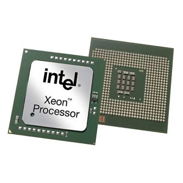
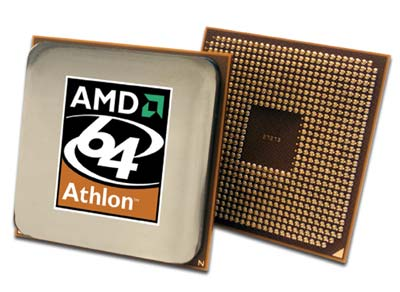
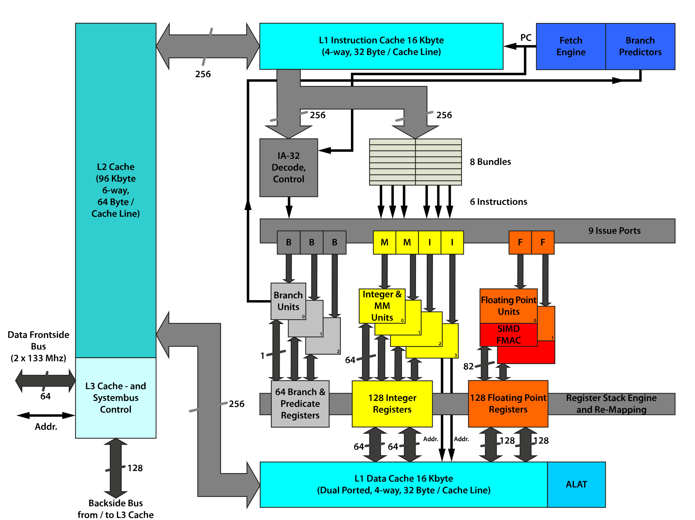

64 bit Computer Architecture


Presenter
Sudip Bhattarai
Block Diagram
Major Blocks of Processor
General register unit
Control and decoding unit
Bus unit
Cache memory unit
Floating point register unit
Issue ports
New Instructions
- Load Reserved - LRC, LRVR
- Multiply Logical - ML, MLR
- Divide Logical - DL, DLR
- Add Logical w/Carry - ALC
- Subtract Logical w/Borrow - SLB
- Store Reserved - STRV
- Rotate Left Single Logical- RRL
Advantage
- 64-bit processors have 64 bit data lines (2^64 possible values and access to 16,77,216 TB physical memory directly)
- Speed and execution is both faster in 64-bit processors
- 64 bit cpu executing in 32 bit program is faster compared to 32 bit cpu
- Larger virtual memory is available for programs
Disadvangages
- Compared to x86 processors, pointers are double the size. This increases the memory required by 64 bit programs.
- More virtual memory is required for application running in 64 bit environment
Programmable Register Set

HelloWorld64.asm
extern printf ; the C function, to be called
section .data
msg: db "Hello world", 0
fmt: db "%s", 10, 0 ; The printf format, "\n",'0'
section .text ; Code section.
global main ; the standard gcc entry point
main: ; the program label for the entry point
push rbp ; set up stack frame, must be alligned
mov rdi,fmt
mov rsi,msg
mov rax,0
call printf ; Call C function
pop rbp ; restore stack
mov rax,0 ; normal, no error, return value
ret ; return
Thank You!
Any Questions?
Powered by: Impress.js (https://github.com/impress/impress.js)
Source code of presentation available at: https://github.com/mesudip/impress.j